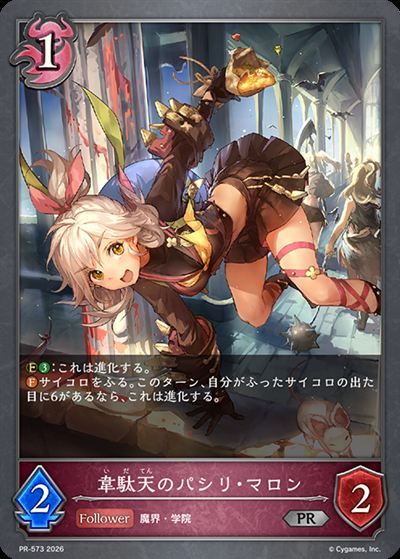
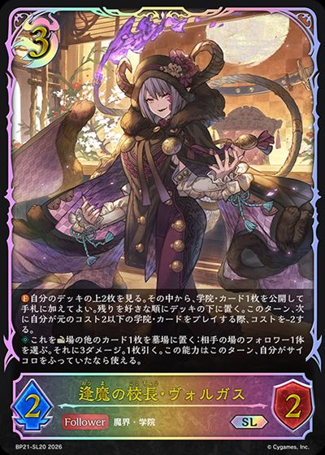
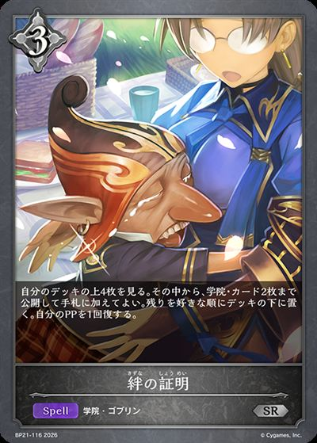
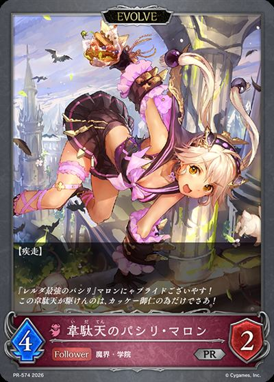
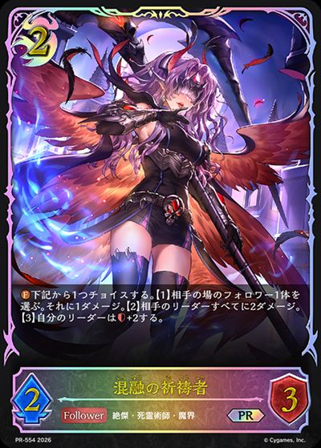
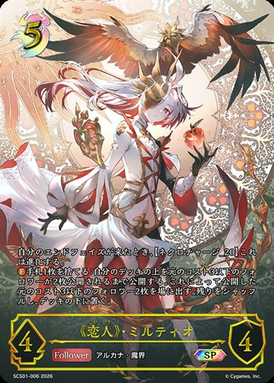
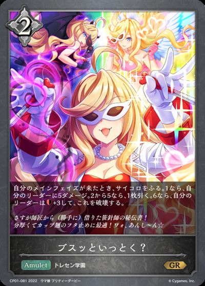

1 アルパカ
1/22｜2026/08/09
1SQ2C0
多了哪些牌
 +3
+3 +2
+2 +2
+2 +1
+1 +1
+1 +1
+1少了哪些牌
 -3
-3 -3
-3 -2-2
-2-2 主BP21-080/BP21-P43：バッドスクールライフ主卡组 × 3
主BP21-080/BP21-P43：バッドスクールライフ主卡组 × 3
主BP21-081/PR-573：韋駄天のパシリ・マロン主卡组 × 3 主BP21-083/BP21-P44：魔眼のスケバン主卡组 × 3
主BP21-083/BP21-P44：魔眼のスケバン主卡组 × 3 主BP21-114/PR-582：大いなる学び舎主卡组 × 3
主BP21-114/PR-582：大いなる学び舎主卡组 × 3 主BP21-077/BP21-P40：バッドスピナー・アルカ主卡组 × 3
主BP21-077/BP21-P40：バッドスピナー・アルカ主卡组 × 3 主BP21-087/BP21-P48：極徒会表番・デナン主卡组 × 3
主BP21-087/BP21-P48：極徒会表番・デナン主卡组 × 3 主BP21-113/PR-565：煌奏の学徒・アンリエット主卡组 × 3
主BP21-113/PR-565：煌奏の学徒・アンリエット主卡组 × 3 主BP21-075/BP21-SL19/BP21-U05：エンペラーフィスト・ガロム主卡组 × 3
主BP21-075/BP21-SL19/BP21-U05：エンペラーフィスト・ガロム主卡组 × 3
主BP21-076/BP21-SL20：逢魔の校長・ヴォルガス主卡组 × 3主BP21-110/BP21-SL26：レジェンドティーチャー・ルシウス主卡组 × 3
主BP21-116/BP21-P62：絆の証明主卡组 × 2 主BP21-073/BP21-SL17：屍術王・コルネリウス主卡组 × 3主BP21-112/BP21-SL28/BP21-U07：駆動の領域・グレティナ主卡组 × 3
主BP21-073/BP21-SL17：屍術王・コルネリウス主卡组 × 3主BP21-112/BP21-SL28/BP21-U07：駆動の領域・グレティナ主卡组 × 3 主BP11-069/BP11-SL13：カオスルーラー・アイシィレンドリング主卡组 × 1
主BP11-069/BP11-SL13：カオスルーラー・アイシィレンドリング主卡组 × 1 主BP19-081/BP19-P22：蛇殿の執行者・ゲノムエル主卡组 × 1
主BP19-081/BP19-P22：蛇殿の執行者・ゲノムエル主卡组 × 1 进BP11-070/BP11-SL14/BP11-U05：カオスルーラー・アイシィレンドリング进化 × 1
进BP11-070/BP11-SL14/BP11-U05：カオスルーラー・アイシィレンドリング进化 × 1 进BP21-074/BP21-SL18：屍術王・コルネリウス进化 × 3
进BP21-074/BP21-SL18：屍術王・コルネリウス进化 × 3 进BP21-078/BP21-P41：バッドスピナー・アルカ进化 × 2
进BP21-078/BP21-P41：バッドスピナー・アルカ进化 × 2
进BP21-082/PR-574：韋駄天のパシリ・マロン进化 × 2进BP21-111/BP21-SL27：レジェンドティーチャー・ルシウス进化 × 2+3+2+2+1+1+1-3-3-2-2 +2+1
+2+1 +1-1-1
+1-1-1 +3+3
+3+3 +2
+2 +2+1+1-3-3-2-2-1-1+2+2+1-1-1-1+3+2+1-1-1-1-1+2+2+2-1-1-1-1+3+2+2-1-1-1-1-1+3+2-1-1-1-1-1
+2+1+1-3-3-2-2-1-1+2+2+1-1-1-1+3+2+1-1-1-1-1+2+2+2-1-1-1-1+3+2+2-1-1-1-1-1+3+2-1-1-1-1-1 +1+1+2+1+1-1-1
+1+1+2+1+1-1-1 +3
+3 +2
+2 +2
+2
+2+1+1+1-3-3-2-2-1-1+3+2 +2+2+2+1
+2+2+2+1
+1-3-3-2-2-1-1-1+3+2+1-1-1-1-1+3+2+2-1-1-1-1-1+3+2 +1-1-1-1-1
+1-1-1-1-1 +3
+3 +3+2+1+1-3-3-2-2+2+2
+3+2+1+1-3-3-2-2+2+2 +2+1-1-1-1-1-1+3+3+2+2+2+1-3-3-2-2-1-1-1+3+3+2+1+1+1+1-3-2-2-2-1-1-1+3+2+2-1-1-1-1-1+3+2+2+2+2+1+1-3-3-2-2-1-1-1+2+2+2+1-2-2-1-1-1+2+2+2-1-1-1-1+1+1+2+2+1+1-1-1-1-1+2+3+2+1+1-1-1-1-1-1+3+3+2+1-3-2-1-1-1-1+3+3+3+2+1-3-2-2-2-1-1-1+3+2-1-1-1+3+3+3+2+1-3-3-2-2-1-1+2+2+1-1-1-1+3+2+2+1-2-2-1-1-1-1+3+2+2+1-3-2-2-1+1+1-1
+2+1-1-1-1-1-1+3+3+2+2+2+1-3-3-2-2-1-1-1+3+3+2+1+1+1+1-3-2-2-2-1-1-1+3+2+2-1-1-1-1-1+3+2+2+2+2+1+1-3-3-2-2-1-1-1+2+2+2+1-2-2-1-1-1+2+2+2-1-1-1-1+1+1+2+2+1+1-1-1-1-1+2+3+2+1+1-1-1-1-1-1+3+3+2+1-3-2-1-1-1-1+3+3+3+2+1-3-2-2-2-1-1-1+3+2-1-1-1+3+3+3+2+1-3-3-2-2-1-1+2+2+1-1-1-1+3+2+2+1-2-2-1-1-1-1+3+2+2+1-3-2-2-1+1+1-1 +3+2+1-1-1-1-1
+3+2+1-1-1-1-1 +3+1+1-1-1-1+2+2+1+1+1-1-1-1-1-1+3+2+1-3-2-1+3+2+2+2+1-3-2-2-1-1-1+3+2+2+2+2+1-3-3-2-2-1-1+3+3+1+1-3-2-1-1-1+3+2+1+1-1-1-1-1-1+3+2+1+1-3-2-1-1+3+2+1+1+1+1+1-3-2-1-1-1-1-1+3+1+1-1-1-1+3-1+2+2+1-1-1-1+2+1-1+3+3+3+2+1+1-3-3-2-2-1-1-1+3+1-1-1+3+3+2-2-2-1-1-1-1+3+2+2
+3+1+1-1-1-1+2+2+1+1+1-1-1-1-1-1+3+2+1-3-2-1+3+2+2+2+1-3-2-2-1-1-1+3+2+2+2+2+1-3-3-2-2-1-1+3+3+1+1-3-2-1-1-1+3+2+1+1-1-1-1-1-1+3+2+1+1-3-2-1-1+3+2+1+1+1+1+1-3-2-1-1-1-1-1+3+1+1-1-1-1+3-1+2+2+1-1-1-1+2+1-1+3+3+3+2+1+1-3-3-2-2-1-1-1+3+1-1-1+3+3+2-2-2-1-1-1-1+3+2+2
+2+1+1+1+1-3-3-2-2-1-1-1+3+1-1-1-1-1+1-1+2+2+1-1-1-1+2+2+2-1-1-1-1+3+2+1+1-3-2-1-1+2+2+1-1-1-1+1+1+2+2+2-1-1-1-1+2+1+1+1+1-1-1-1-1+3+2+1+1+1+1+1-3-3-2-2+3 +3+1+1-3-2-2-1+2+2+2-1-1-1-1+3+3+3+2+1-3-3-2-2-1-1+3+2-1-1-1+1-1-1+2+2+1-1-1-1+3+3+2+2+1-3-3-2-1-1-1+3+2+2+2+2+1+1-3-3-2-2-1-1-1+2+2+2+1-2-2-1-1-1+3+2+2-1-1-1-1-1+2+1+1+1-1-1-1+3+2+2+2+2+1+1-3-3-2-2-1-1-1+2+2+2-1-1-1-1+3+3+2+2+1+1-3-3-2-2-1-1+3+3+2-3-2-2-1+3+2+1+1+1-3-2-2-1+2+2+2+1-2-2-1-1-1+3+3+2-2-2-1-1-1-1+3+2+1-1-1-1-1
+3+1+1-3-2-2-1+2+2+2-1-1-1-1+3+3+3+2+1-3-3-2-2-1-1+3+2-1-1-1+1-1-1+2+2+1-1-1-1+3+3+2+2+1-3-3-2-1-1-1+3+2+2+2+2+1+1-3-3-2-2-1-1-1+2+2+2+1-2-2-1-1-1+3+2+2-1-1-1-1-1+2+1+1+1-1-1-1+3+2+2+2+2+1+1-3-3-2-2-1-1-1+2+2+2-1-1-1-1+3+3+2+2+1+1-3-3-2-2-1-1+3+3+2-3-2-2-1+3+2+1+1+1-3-2-2-1+2+2+2+1-2-2-1-1-1+3+3+2-2-2-1-1-1-1+3+2+1-1-1-1-1| 图片 | 平均张数 | 使用率 | 携带最好成绩 | 不携带最好成绩 | 1张比例 | 2张比例 | 3张比例 |
|---|---|---|---|---|---|---|---|
|
3.00 | 100.0% | 1 1/246NUMR |
无 | 0.0% | 0.0% | 100.0% |
|
3.00 | 100.0% | 1 1/246NUMR |
无 | 0.0% | 0.0% | 100.0% |
| 3.00 | 100.0% | 1 1/246NUMR |
无 | 0.0% | 0.0% | 100.0% | |
|
3.00 | 100.0% | 1 1/246NUMR |
无 | 0.0% | 0.0% | 100.0% |
|
3.00 | 100.0% | 1 1/246NUMR |
无 | 0.0% | 0.0% | 100.0% |
| 3.00 | 100.0% | 1 1/246NUMR |
无 | 0.0% | 0.0% | 100.0% | |
|
3.00 | 100.0% | 1 1/246NUMR |
无 | 0.0% | 0.0% | 100.0% |
|
3.00 | 100.0% | 1 1/246NUMR |
无 | 0.0% | 0.0% | 100.0% |
|
2.99 | 100.0% | 1 1/246NUMR |
无 | 0.0% | 1.2% | 98.8% |
|
2.96 | 98.8% | 1 1/246NUMR |
2 2/1711WKA0 |
0.0% | 0.0% | 98.8% |
|
2.08 | 75.0% | 1 1/246NUMR |
1 1/221SQ2C0 |
2.4% | 11.9% | 60.7% |
|
1.80 | 70.2% | 1 1/246NUMR |
1 1/221SQ2C0 |
7.1% | 16.7% | 46.4% |
|
1.19 | 48.8% | 1 1/172C6ZDA |
1 1/246NUMR |
2.4% | 22.6% | 23.8% |
|
0.75 | 45.2% | 1 1/246NUMR |
1 1/19234Q7S |
19.0% | 22.6% | 3.6% |
|
0.83 | 44.0% | 1 1/19234Q7S |
1 1/246NUMR |
9.5% | 29.8% | 4.8% |
|
1.11 | 40.5% | 1 1/221SQ2C0 |
1 1/246NUMR |
2.4% | 6.0% | 32.1% |
|
0.40 | 31.0% | 1 1/246NUMR |
1 1/172C6ZDA |
21.4% | 9.5% | 0.0% |
|
0.21 | 10.7% | 1 1/172C6ZDA |
1 1/246NUMR |
2.4% | 6.0% | 2.4% |
|
0.11 | 10.7% | 1 1/221SQ2C0 |
1 1/246NUMR |
10.7% | 0.0% | 0.0% |
|
0.26 | 9.5% | 2 2/1711WKA0 |
1 1/246NUMR |
0.0% | 2.4% | 7.1% |
| 0.15 | 9.5% | 1 1/246NUMR |
1 1/221SQ2C0 |
3.6% | 6.0% | 0.0% | |
|
0.17 | 8.3% | 1 1/221SQ2C0 |
1 1/246NUMR |
1.2% | 6.0% | 1.2% |
|
0.18 | 7.1% | 5 5/425N451 |
1 1/246NUMR |
0.0% | 3.6% | 3.6% |
|
0.14 | 7.1% | 1 1/221SQ2C0 |
1 1/246NUMR |
0.0% | 7.1% | 0.0% |
| 0.15 | 6.0% | 2 2/1711WKA0 |
1 1/246NUMR |
0.0% | 2.4% | 3.6% | |
|
0.08 | 6.0% | 2 2/167W2X5 |
1 1/246NUMR |
3.6% | 2.4% | 0.0% |
|
0.11 | 4.8% | 3 3/235LQHR |
1 1/246NUMR |
0.0% | 3.6% | 1.2% |
|
0.05 | 2.4% | 2 2/1711WKA0 |
1 1/246NUMR |
0.0% | 2.4% | 0.0% |
| 0.05 | 2.4% | 6 6/172U0LJL |
1 1/246NUMR |
0.0% | 2.4% | 0.0% | |
|
0.04 | 1.2% | 6 6/2367M91 |
1 1/246NUMR |
0.0% | 0.0% | 1.2% |
|
0.04 | 1.2% | 5 5/12UAKAU |
1 1/246NUMR |
0.0% | 0.0% | 1.2% |
|
0.04 | 1.2% | 3 3/141F0Q7 |
1 1/246NUMR |
0.0% | 0.0% | 1.2% |
|
0.04 | 1.2% | 4 4/323DCSX |
1 1/246NUMR |
0.0% | 0.0% | 1.2% |
|
0.04 | 1.2% | 4 4/323DCSX |
1 1/246NUMR |
0.0% | 0.0% | 1.2% |
|
0.01 | 1.2% | 3 3/2954J6K |
1 1/246NUMR |
1.2% | 0.0% | 0.0% |
|
0.01 | 1.2% | 1 1/19234Q7S |
1 1/246NUMR |
1.2% | 0.0% | 0.0% |
| 0.01 | 1.2% | 5 5/425N451 |
1 1/246NUMR |
1.2% | 0.0% | 0.0% |
| 图片 | 平均张数 | 使用率 | 携带最好成绩 | 不携带最好成绩 | 1张比例 | 2张比例 | 3张比例 |
|---|---|---|---|---|---|---|---|
|
2.89 | 100.0% | 1 1/246NUMR |
无 | 0.0% | 10.7% | 89.3% |
| 2.37 | 100.0% | 1 1/246NUMR |
无 | 0.0% | 63.1% | 36.9% | |
|
2.14 | 100.0% | 1 1/246NUMR |
无 | 0.0% | 85.7% | 14.3% |
|
1.00 | 70.2% | 1 1/246NUMR |
1 1/221SQ2C0 |
40.5% | 29.8% | 0.0% |
|
0.89 | 48.8% | 1 1/172C6ZDA |
1 1/246NUMR |
8.3% | 40.5% | 0.0% |
|
0.31 | 31.0% | 1 1/246NUMR |
1 1/172C6ZDA |
31.0% | 0.0% | 0.0% |
|
0.19 | 9.5% | 2 2/1711WKA0 |
1 1/246NUMR |
0.0% | 9.5% | 0.0% |
|
0.08 | 8.3% | 1 1/221SQ2C0 |
1 1/246NUMR |
8.3% | 0.0% | 0.0% |
|
0.12 | 7.1% | 1 1/221SQ2C0 |
1 1/246NUMR |
2.4% | 4.8% | 0.0% |